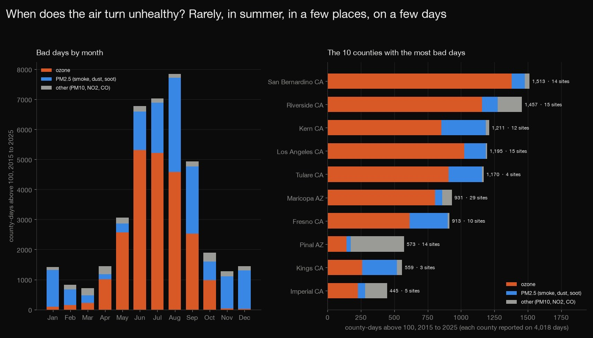
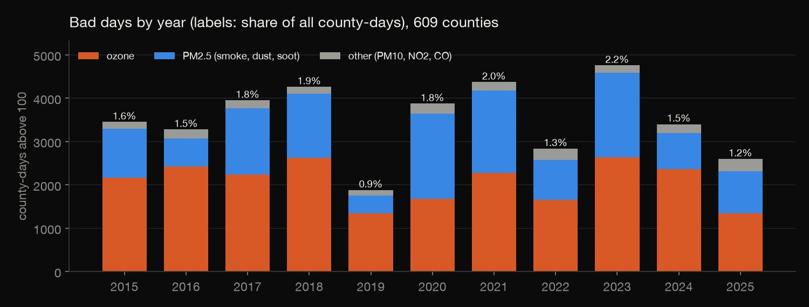
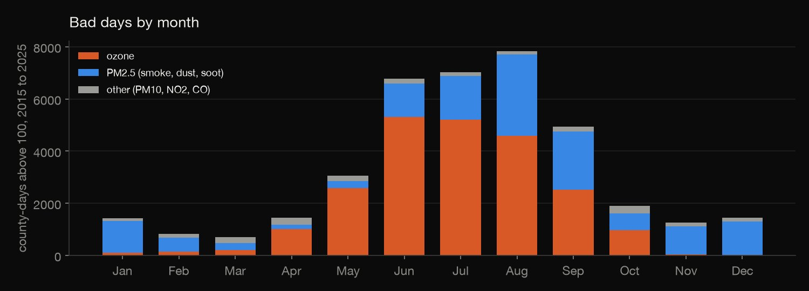
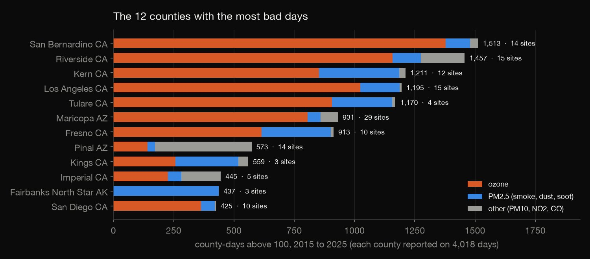
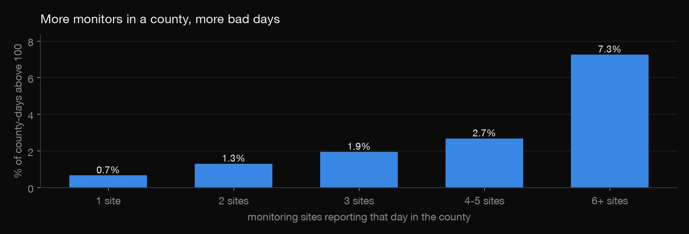
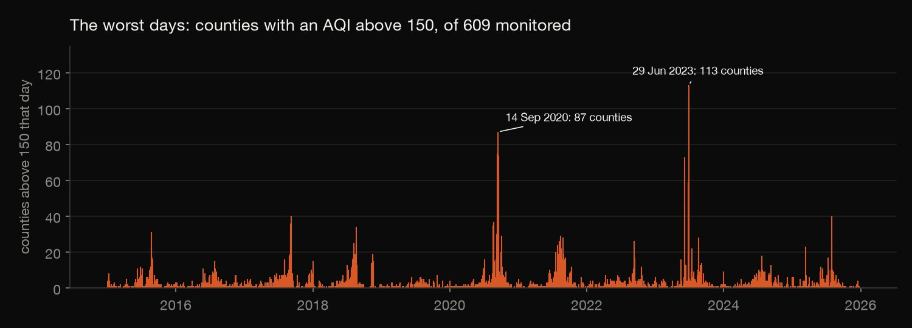

Python · Data visualization · 2026-10
When Does the Air Turn Unhealthy?
Eleven years of EPA daily air quality for 609 US counties: only 1.6% of county-days are unhealthy for sensitive groups or worse, concentrated in summer, in a few places and on a few smoke days, and counties with more monitors look worse; an explorer lets you read every day.

A county's AQI is the highest reading among its monitors, so counties with more monitors show more bad days (0.7% of county-days for one site against 7.3% for six or more): rankings mix air quality with monitoring. The analysis keeps the 609 counties with at least 300 daily values in every year (67.7% of county-days). AQI values above 500 (323 county-days, up to 8,368 for PM10 dust in Mono County) are kept as published. I rely on EPA's statement that its files use the current breakpoints for every year, and smoke is inferred from the pollutant and the dates, not from fire data.
01 — The problem
The EPA publishes a daily air quality index for every US county with a monitor. How often is the air unhealthy, when and where, and which days were the worst?
The questions follow GeeksforGeeks' "Air Quality Data Analysis and Dynamic Visualizations"; the dynamic part is an explorer page that draws every day of 24 counties and filters them by pollutant. The data is the EPA's AirData daily AQI by county for 2015 to 2025, real and current, not a course file.
02 — What I built
3.6 million county-days, audited and analysed:
- Audit: duplicates, categories against values, readings beyond the scale, and a fixed panel of 609 counties.
- How bad, when, where: categories, years, months and the pollutant behind each bad day; the counties with the most; how much the number of monitors matters; the worst days.
- Explorer: a year-by-day grid for 24 counties with a pollutant filter.
- Check:
check.pyrecomputes 109,194 numbers straight from the raw files.
03 — How it was built
- 01
Download eleven yearly files
The EPA AirData "Daily AQI by County" files for 2015 to 2025 (as of 2026-06-25): one row per county per day on which a monitor reported, with the day's AQI (the highest of its monitors and pollutants), its category, the pollutant that set it and the number of sites reporting. They are 1.6 MB a year, so the script fetches them and records their checksums.
- 02
Audit before analysing
No duplicate county-days, and every row's category agrees with its AQI. 23,770 county-days have stray spaces in a name (trimmed). 323 county-days are above 500, where the scale ends, up to 8,368 for PM10 dust in Mono County, California: they are kept as published and no average AQI is used. Monitors come and go, so the analysis uses a fixed panel: the 609 counties with at least 300 daily values in every year, 67.7% of county-days.
d = load(); cnt = d.groupby(["fips", "year"]).size().unstack(fill_value=0); panel = cnt.index[(cnt >= MIN_DAYS).all(axis=1)] - 03
How bad, and when
The share of county-days in each category; bad days (AQI above 100) by year, by month and by the pollutant that set them. A Spearman correlation of year against the share of bad days says whether there is a trend.
o150 = p[p["aqi"] > 150]; rho, pv = stats.spearmanr(by.index.to_numpy(), by["bad_pct"].to_numpy()) - 04
Where, how concentrated, and the worst days
Counties ranked by bad days, the share held by the top 10, 20, 50 and 100, bad days against the number of sites reporting, and the ten days with the most counties above 150, with their states and the pollutant that set them.
p["sites_group"] = pd.cut(p["nsites"], [0, 1, 2, 3, 5, 10 ** 6], labels=["1", "2", "3", "4-5", "6+"]) - 05
Build the explorer
24 counties from the panel and every day of 2015 to 2025, packed into 290 KB: three characters per day, the AQI in base 36 and a letter for the pollutant. The page draws a year-by-day grid on a canvas, with a county menu, a pollutant filter and a hover read-out, in the browser with no server. I checked its summary numbers for all 24 counties against a recount from the raw files.
a = recs[fips].get((d0 + timedelta(days=k)).isoformat()); s.append(b36(a[0]) + a[1] if a else "zz-") - 06
Recompute it from the raw files
check.pyrecomputes 109,194 numbers in plain Python straight from the zipped CSVs, with the csv module and counters and no pandas: the audit and the panel, every table, all 4,018 days, a Spearman correlation written out by hand, and every day of the explorer's 24 counties.panel = {f for f in all_counties if all(county_year[(f, y)] >= MIN_DAYS for y in YEARS)}
04 — Results

Rare, with no steady trend. In the panel of 609 counties, 68.3% of county-days are good, 30.1% moderate, 1.23% unhealthy for sensitive groups, 0.29% unhealthy, 0.05% very unhealthy and 0.02% hazardous. 38,652 of the 2,423,326 county-days (1.6%) are above 100. The share ranges from 0.85% in 2019 to 2.16% in 2023 with no direction over the eleven years (Spearman correlation −0.09, p = 0.79). Ozone sets 58.8% of the bad days, PM2.5 (smoke, dust, soot) 35.6% and the rest 5.7%; of the 8,856 county-days above 150, PM2.5 sets 57.2% and ozone 34.0%. The PM2.5 share of the bad days ranges from 19.6% in 2016 to 51.0% in 2020.

Summer, and winter smoke. June to August hold 56.0% of the bad days. Ozone peaks in June and July (5,314 and 5,209 county-days) and PM2.5 in August (3,129). In November, December and January PM2.5 sets 85%, 89% and 86% of the bad days.

| County | Bad days | Share |
|---|---|---|
| San Bernardino CA | 1,513 | 37.7% |
| Riverside CA | 1,457 | 36.3% |
| Kern CA | 1,211 | 30.1% |
| Los Angeles CA | 1,195 | 29.7% |
| Tulare CA | 1,170 | 29.1% |
| Maricopa AZ | 931 | 23.2% |
| Fresno CA | 913 | 22.7% |
A few places. Each county reported on 4,018 days; "share" is the part of them above 100. San Bernardino County had 1,513 bad days, 91% of them ozone. The ten counties with the most bad days hold 25.8% of all bad county-days, the twenty 34.8%, the fifty 50.7% and the hundred 64.8%; 5 of the 609 counties (0.8%) had none in eleven years. Fairbanks North Star, Alaska had 437, every one set by PM2.5.

More monitors, more bad days. A county's AQI is the highest reading among its monitors, so a county with more of them has more chances to record a bad day: 0.66% of county-days are above 100 for counties reporting one site that day, 1.30% for two, 1.95% for three, 2.68% for four or five and 7.26% for six or more. County rankings mix air quality with how well a county is monitored.

| Day | Counties | Most affected |
|---|---|---|
| 29 Jun 2023 | 113 | PA 22, OH 17 |
| 28 Jun 2023 | 104 | OH 19, IN 16 |
| 14 Sep 2020 | 87 | CA 35, WA 22 |
| 13 Sep 2020 | 83 | CA 32, WA 22 |
| 15 Sep 2020 | 81 | CA 26, WA 22 |
| 12 Sep 2020 | 75 | CA 29, WA 23 |
| 16 Sep 2020 | 74 | WA 22, CA 18 |
| 7 Jun 2023 | 73 | NY 16, PA 15 |
| 8 Jun 2023 | 64 | PA 15, NJ 11 |
| 17 Sep 2020 | 61 | WA 18, OR 16 |
A few days. The table lists the ten days with the most of the 609 counties above 150, and the two states with the most. PM2.5 sets 93% to 98% of the county-days above 150 on each of them. The dates match the June 2023 Canadian wildfire smoke and the September 2020 West Coast fires; smoke is inferred from the pollutant and the dates, not from fire data.
05 — What I'd do next
- Spread the readings over people: weight each county's days by its population, or use the hourly files, to ask how many people breathed bad air and for how long.
- Put fire data next to the PM2.5 days to test the smoke explanation instead of inferring it.
- Compare monitors one by one, to separate how clean a place is from how closely it is watched.